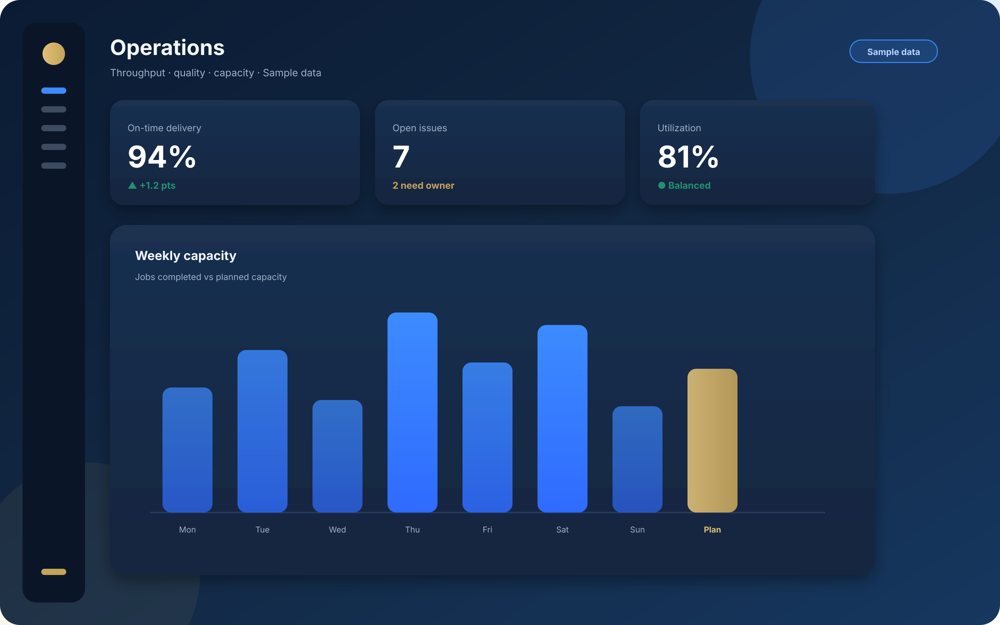

Definitions drift
Teams disagree on what a lead, job, or margin means — so reports cannot be trusted across the company or group.
DataDashOS
Hard work without a shared scorecard is just a hamster wheel. DataDash identifies which KPIs your contracting business should track, tracks them for you, and helps you implement the changes to hit them — so the business aligns to what actually matters.

Try it
Tell us a little about your business and we'll show you the KPIs a business like yours should run on.
The problem
GoHighLevel, QuickBooks, ServiceTitan, ads, and spreadsheets stay separate — so referral results, follow-up times, and combined performance never land in one place.
Teams disagree on what a lead, job, or margin means — so reports cannot be trusted across the company or group.
Accounting, CRM, field-service, and ads each hold part of the truth. Nobody sees the full scorecard.
Insights die in meetings. Without owners and outcome tracking, the same problems return every week.
Operator-built proof
Not a theory deck — DataDashOS grew from running Simmitri day to day.
Product
Six modules that form one shared KPI layer — built for contractors, without replacing the software they already run.
Executive, marketing, sales, and operations views with prior-period and year-over-year comparisons, templates, and dark/light mode.
Guided onboarding with industry blueprints, scorecards, targets, trends, CSV import, notes, and AI forecasts.
AI-written weekly summaries, recommendations turned into action items, notifications, and branded reports.
CEO scorecard, decision briefs, and coach chat grounded in your KPIs — with nine specialist roles from finance to safety.
Built for QuickBooks Online, GoHighLevel, and Google Ads, with connection status, sync logs, and privacy-safe demo mode.
Workspaces, invitations, roles, admin controls, audit logs, and white-label branding per workspace.
A look inside
Product screens from the DataDashOS deck — executive, marketing, sales, and operations views on sample data.




How it works
A weekly operating loop that turns contractor KPIs into owned decisions.
Guided onboarding and contractor blueprints set the KPIs, owners and targets.
Reconciled financial data and a CRM feed or CSV import first — more connectors later.
Dashboards for each company and the group, with targets and trends.
A weekly AI review explains what changed and recommends actions.
Each action gets an owner, and results are tracked against the KPI.
Origin story
DataDashOS starts at Simmitri Holdings — two operating companies, 32 years of contractor know-how, real data and real users. We unify performance across existing stacks instead of forcing one system on every company.
That is the founding problem: shared leads, separate software, and no shared scorecard. DataDashOS is the shared KPI layer.
Unify performance, not software
Each company keeps its own dashboard. Holdings sees the authorized shared view — referrals, cross-company opportunities, and combined KPIs — on the same definitions.
FAQ
Short, citable answers designed for humans, search snippets, and AI overviews.
Early access
Be first to run shared KPIs, weekly AI reviews, and owned actions on your contractor data. Only name and email are required — we will reach out when your spot opens.
Simmitri Holdings · 32 years operating · Northern California